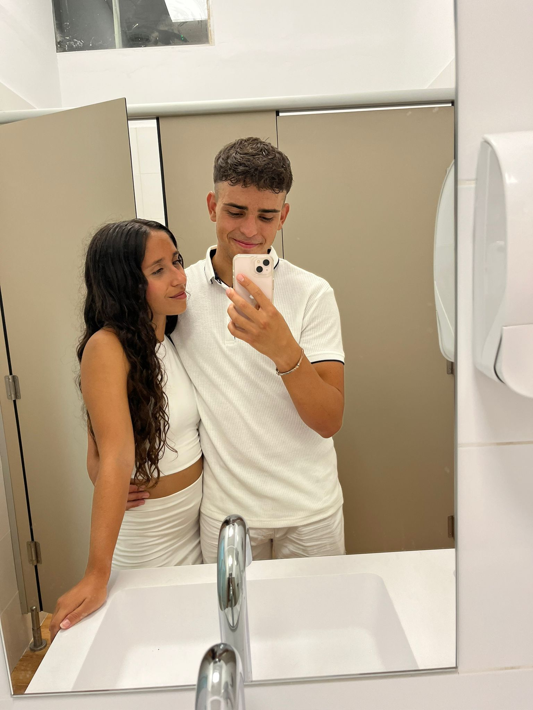

En principio esto iba a ser un amor de verano, yo no tenía intención de nada más, pero tu quisiste cambiarme los planes. Y eso que bien que al principio decías que tu pensabas igual que yo, que no querías nada después por los estudios, por esto por lo otro. Pero yo ya sabía que tu no pensabas así porque mi intuición nunca falla recuérdalo.
Todo comenzó allá por verano del 2022. Estabamos los de siempre en el camping y de pronto vino una avalancha de nueva gente al camping, al principio estaba empanado, no sabía quien coño había venido ni cuanto tiempo se iban a quedar. De repente todo el mundo hablaba de los nuevos y entre ellos te encontrabas tú. Decían que había venido una chica bastante guapa con un cuerpazo que se llamaba Rocío, yo no sabía ni quien eras y tampoco me importaba mucho, me daba bastante pereza averiguar quien eras la verdad JAJAJA.
Pero bueno, un día te vi entrando a la piscina y pregunte que quien eras porque me habías llamado la atención. Luego te empezaste a juntar con nosotros por las noches y yo intentaba hablar contigo, también me acuerdo que siempre que jugabamos y preguntaban que quien era la más guapa te decía a ti ehhh. Pero por aquel entonces era el niño tímido y vergonzoso y pues me quitaron el puesto JAJAJ El caso es que tu me seguías gustando, pero por respeto nunca hice nada para siquiera intentarlo.
El caso es que este año fue diferente, empecé a ver las cosas de otra manera y dije, ¿Por qué no intentarlo? Y eso hice. Lo llamaremos la estrategia de la rodilla. Yo quería hacerte ver poco a poco mis intenciones, así que esa noche intentaba buscar el contacto físico y visual, no se me ocurrió una mejor cosa que tocarte la rodilla JAJAJA. Luego cuando estabamos jugando a lo de las miradas, siempre te miraba a ti en la primera ronda para que te dieses cuenta.
Poco a poco lo iba consiguiendo, estaba siendo super descarado en todos los sentidos porque ya me la pelaba bastante todo, no tenía nada que perder. Además, me divertía mucho haciéndolo porque te vacilaba a más no poder. Luego el día ese que nos despedimos "bien" te admito que se me cerró un poco el culito porque yo sabía que tu querías, pero yo no me iba a lanzar chavala, encima que hago todo el trabajo para que puedas estar conmmigo que es un privilegio. Bueno, ya después poco a poco fuimos cogiendo confianza para todo en general y me fuiste llevando al lado oscuro. Yo que quería ser un bandido/gangster y vas y me tiras el plan abajo, ya te vale.
La cosa es que después de lo que he pasado me costaba volver a ser cariñoso con alguien y motrarle lo que siento porque a lo mejor no era como yo esperaba o yo no iba a hacer las cosas bien. Sin embargo, poco a poco estoy volviendo a mi, de verdad que intento ser cariñoso, pero hay veces que simplemente no estoy en el mood por decirlo así. Por eso quiero que valores los ratos en los que estoy así porque no cualquiera ve ese lado de mí y además que todavía me cuesta un poco decir lo que siento. No quiero decepcionarte y que a lo mejor yo no sea como tú te esperas que sea, por eso es por lo que me da miedo en cierto modo, pero supongo que son cosas de la vida y como vida solo hay una, ¿Por qué no?
La cosa es que por cosas del destino o por casualidad nos encontramos aquí los dos en este momento y me gustaria proponerte una propuesta.
Es broma es broma mujer, no te enfades, mi propuesta es la siguiente: